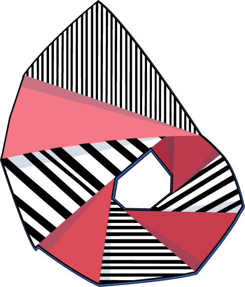
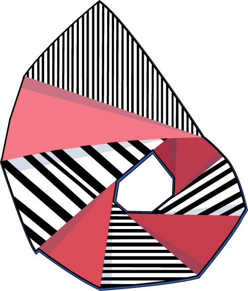
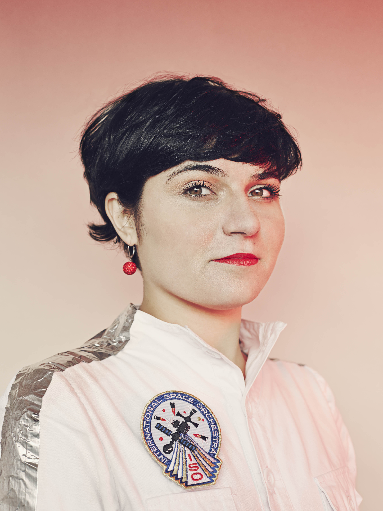

The main programme of RTD 2015 was held over three days between the 25th and 27th March 2015, and comprised invited talks (‘Provocations’) as plenary sessions, ‘Rooms of Interest’ for the presentation and discussion of authors’ work, a ‘Making Space’ session to create additional opportunities to engage with the exhibited work, and social events in the evenings. We also organised informal events on the eve of the main conference (24th March), for attendees arriving early into Cambridge, including two sound walks by Tim Shaw.
To see details about work presented in each Room of Interest session, please visit the Proceedings page. To see some of the documentation from the event as it happened, see the Experiences page.
Provocations
Opening Provocation: Nelly Ben Hayoun
'To design experiences in a hyperreal world; the designer who paints with nuances and tones'

Dubbed the Willy Wonka of Design and Science, award-winning director and designer of experiences Nelly Ben Hayoun is a critical explorer, and a fearless and passionate provocateur. In 2013, Icon Magazine nominated Ben Hayoun as one of the 50 international designers “shaping the future”. She is the Designer of Experiences at the SETI (Search for Extraterrestrial Intelligence) Institute, Head of Experiences at We Transfer, and a member of the Space Outreach and Education committee at the International Astronautical Federation. Wired magazine awarded Nelly Ben Hayoun with a WIRED Innovation fellowship for her work to date and its potential to make 'significant impact on the world '. Ben Hayoun previously collaborated with Beck, Bobby Womack, Damon Albarn, Maywa Denki, Bruce Sterling and Penguin Café in a musical collaboration that took music into space. Blasted in space from a Japanese launch pad in August 2013; she assembled and directs the International Space Orchestra (ISO) - the world first orchestra of space scientists from NASA.
Provocation Panel: 'RTD Question Time'
John Bowers, Bill Gaver and Jonas Löwgren. Moderated by Carl DiSalvo


We have decided to take the somewhat risky move for this provocation of modelling it on Question Time, a current affairs programme in the UK in which a panel of politicians and other pundits discuss questions submitted in advance by audience members. Thus we invite conference participants to submit their questions about the practice of Research through Design (RtD) in advance to our three moderately- qualified 'experts'. The questions we receive will be vetted for the best and most challenging, but the panel members will not see them in advance.
Go ahead, ask the big questions you've always wanted to ask: How does RtD relate to commercial practice? What are the best ways to disseminate RtD? Are blue LEDs really that cool? And what makes you three think you're even 'moderately qualified' to do this anyway? Questions at the conference can be submitted via the registration desk, or directly to our massively-qualified moderator Carl DiSalvo. Join in, and make this a provocation for audience and panellists alike!
Provocation on 'Making, and making a difference'
David Gauntlett and Amy Twigger Holroyd

David Gauntlett is a Professor in the Faculty of Media, Arts and Design, and Co-Director of the Communications and Media Research Institute, at the University of Westminster, UK. His teaching and research is about self-initiated everyday creativity, and cultures of making and exchanging. He is the author of several books, including Creative Explorations (2007), Making is Connecting (2011), and Making Media Studies (2015). He has worked with a number of the world’s leading creative organisations, including the BBC, the British Library, and Tate. For almost a decade he has worked with LEGO on innovation in creativity, play and learning.
Amy Twigger Holroyd is a designer, maker, writer and researcher. Through her knitwear label, Keep & Share, she has explored the emerging field of fashion and sustainability since 2004. Her work has been featured in many books and publications, from Vogue to Fashion Theory. In 2013 Amy completed her PhD at Birmingham Institute of Art & Design, investigating amateur fashion making – which she describes as ‘folk fashion’ – as a strategy for sustainability. Amy is now a Research Fellow in the School of Design at the University of Leeds, working on a three-year AHRC-funded project, Design Routes.
Closing Provocation: Tim Ingold
‘Designs Along a Piece of String’

Tim Ingold is Professor of Social Anthropology at the University of Aberdeen, and Fellow of both the British Academy and the Royal Society of Edinburgh. He has carried out fieldwork in Lapland, and has written on the comparative anthropology of the circumpolar North, evolutionary theory, human-animal relations, language and tool use, environmental perception and skilled practice. His current work explores the interface between anthropology, archaeology, art and architecture. In 2014, Ingold was honoured with the Royal Anthropological Institute’s Huxley Memorial Medal. His books include The Perception of the Environment (2000), Lines (2007), Being Alive (2011), Making (2013) and the Life of Lines (2015).
Closing Provocation: Christopher Frayling

Sir Christopher Frayling is a cultural historian, educationalist and writer who has started important and influential conversations about the nature of research and pedagogy in the creative arts and design. Until recently, Sir Christopher served as Rector of the Royal College of Art and Chair of the Arts Council England. Sir Christopher is an award-winning broadcaster on network radio and television, and author of 21 books on the arts, design and popular culture. He has chaired numerous committees and organisations, including the Design Council, the Royal Mint Advisory Committee and the Crafts Study Centre. Sir Christopher is currently Professor Emeritus of Cultural History at the Royal College of Art, Fellow of Churchill College Cambridge and Visiting Professor at the University of Lancaster. He was knighted in 2001 for Services to Art and Design Education.
Christopher Frayling’s RTD 2015 Provocation was filmed in advance of the conference event, and available to view at the following Vimeo links.
Part 1: Research through Design and its evolution
Part 2: Designers as knowledge generators
Part 3: Unpacking craft knowledge
Part 4: RTD in design education
Part 5: On the RTD Proceedings
Part 6: Building a conference series
Part 7: Design-led research: the next chapter
Conference Programme
Along with our invited ‘Provocations’, the central focus of RTD 2015 was a curated exhibition of peer-reviewed design work and an associated programme of ‘Rooms of Interest’ sessions where authors presented and discussed their work. Rooms of interest were scheduled across three tracks during the conference.
Another key feature of RTD 2015 was the documentation of the unfolding conference experience. Based on feedback from the inaugural RTD, we have been looking at the ways to capture rich discussions taking place at the conference, during the sessions and beyond, drawing upon a range of skills and media. Through this endeavour we aimed to document those valuable exchanges around people and their work that can easily be lost once the event is over. We also held sessions at RTD 2015 dedicated to reflecting back to delegates interpretations of the discussions captured so far.
We planned a number of social events around the main programme, including a social gathering the eve of the conference for those arriving early into Cambridge, an evening drinks reception on Day 1, and conference dinner at Jesus College, University of Cambridge, on Day 2. An overview of the main programme of events, along with day-by-day details, follow.


Documentation at RTD 2015
As well as the programme of talks and social events, we have also explored new ways for the conference experience to be captured and documented. This includes 'scribes' co-ordinated by our Documentation Chairs, Jayne Wallace and Jon Rogers, who have brought their own creative, interpretative stance to capturing the discussions around the presentations of work.
We also invited attendees to participate in the documentation process using Bootlegger, a mobile app for android devices that coordinates event attendees into a camera crew. Bootlegger is being developed by researchers from the Digital Interaction Group at Newcastle University. During the conference, attendees used Bootlegger to capture their impressions of the unfolding conference experience in the form of short video clips. Footage uploaded via the app will form part of the event documentation. To find out more, visit here.